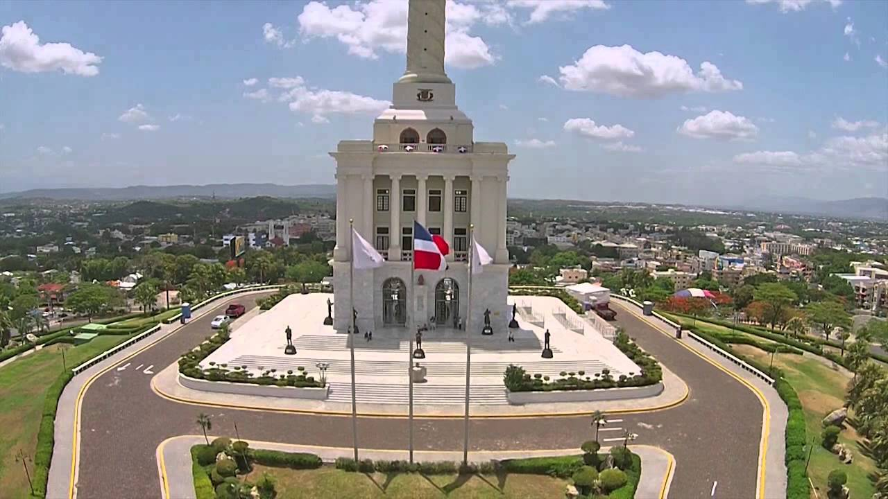

All visits to Santiago include an obligatory stop at El Monumento, the city’s iconic white marble tower, circled on all sides by a multilevel garden and boasting panoramic views over the entire city. You can tour the interior of the 67-meter (220-foot) high monument, named after the heroes of the Restoration War (1863-1865) who died in the fight to regain the DR’s independence from Spain. Spread over five floors are displays of the DR’s major historical battles, as well as paintings that Spanish artist Vela Zanetti created during his exile after the Spanish Civil War. On the fifth floor is the ultimate reward: a grand panoramic view of the city of Santiago from a wraparound balcony, with the Cordillera Central mountain range in the distance.
Originally constructed in 1944 by Rafael Trujillo, aka El Jefe, who ruled the nation for 30 years, this imposing monument—set on a hill in downtown Santiago—was intended to honor the dictator himself. Following Trujillo's assassination in 1961, it was renamed and rededicated, and now honors those who fought in the Dominican Restoration War from 1863 to 1865. Bronze statues of the generals that led the country in its struggle for independence from Spain stand on the steps of the eight-story monument.